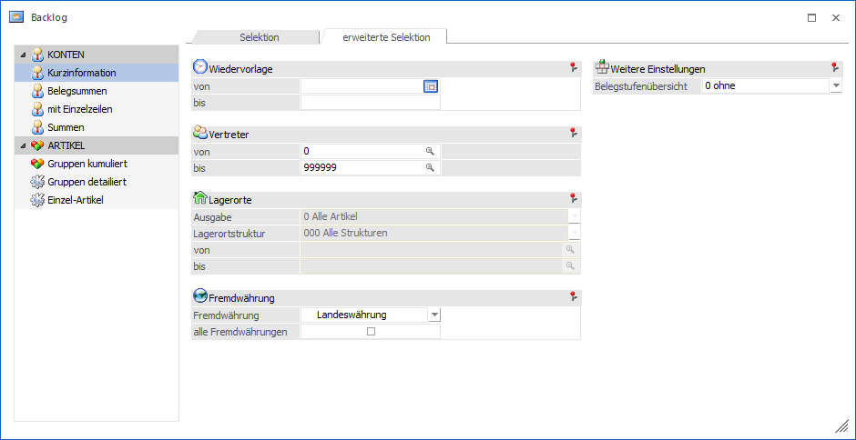
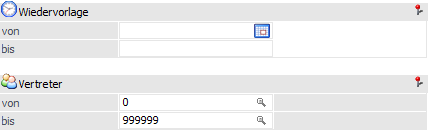
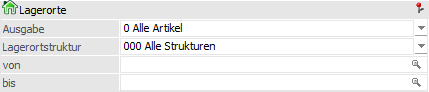
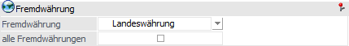
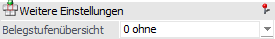

In dem Register "erweitere Selektion" werden weitere Selektionsfelder und Optionen angeboten.
Hinweis
Bei einem Wechsel der Auswertungsmethode werden die bisher getätigten Selektionen bzw. Optionen übernommen.

Folgende Einstellungen und Selektionskriterien stehen in diesem Register zur Verfügung:
Selektion - allgemein

Ø Wiedervorlage von / bis
Einschränkung auf das Wiedervorlagedatum.
Ø Vertreter von / bis
Einschränkung der Vertreter.
Lagerorte

In diesem Bereich kann eine Selektion aufgrund des WinLine Lagermanagements erfolgen, wobei die Option "Lagerorte berücksichtigen" aktiviert sein muss.
Ø Ausgabe
An dieser Stelle kann definiert werden, ob Artikel mit bzw. ohne Lagerortstruktur berücksichtigt werden sollen (Einstellung wird benutzerspezifisch gespeichert). Folgende Varianten stehen zur Verfügung:
ü 0 - Alle Artikel
Es werden alle
Belegzeilen, d.h. unabhängig von der Lagerortstruktur, ausgegeben.
ü 1 - Nur Artikel mit
Lagerortstruktur
Es werden nur jene Belegzeilen ausgegeben, bei denen der
Artikel im Artikelstamm eine Lagerortstruktur hinterlegt hat. Ausgenommen
hiervon sind Zeilen der Typen "3 - Text" und "6 - Gutschrift".
ü 2 - Nur Artikel ohne
Lagerortstruktur
Es werden nur jene Belegzeilen ausgegeben, bei denen dem
Artikel im Artikelstamm keine Lagerortstruktur hinterlegt wurde. Ausgenommen
hiervon sind Zeilen der Typen "3 - Text" und "6 - Gutschrift".
Da in diesem
Fall die Selektion nach Lagerorten nicht notwendig ist, werden jene Felder für
eine Eingabe gesperrt.
Ø Lagerortstruktur
In dem Feld "Lagerortstruktur" kann mit Hilfe einer Auswahlliste die auszuwertende Struktur gewählt werden. D.h. es werden in der weiteren Folge, bezogen auf Artikel mit Lagerortstruktur, nur jene Belegzeilen ausgegeben, in welchen Lagerortartikel mit der angegebenen Lagerortstruktur vorkommen.
Hinweis
Durch Auswahl einer Struktur steht der auszuwertende Lagerortbereich fest und die nachfolgenden Felder ("Lagerort von / bis") stehen für eine Eingabe nicht zur Verfügung.
Ø Lagerort von / bis
An dieser Stelle können der auszuwertende Lagerort bzw. der Lagerortbereich über eine "von / bis"-Selektion angegeben werden. D.h. es werden in der weiteren Folge, bezogen auf Artikel mit Lagerortstruktur, nur jene Belegzeilen ausgegeben, in welchen Lagerortartikel mit dem angegebenen Lagerort bzw. dem Lagerortbereich vorkommen.
Hinweis
Wird in dem Feld "von Lagerort" ein Ort angegeben, welcher nicht der letzten Hierarchie-Ebene entspricht, so wird in das Feld "bis Lagerort" automatisch der letzte Lagerort der darunterliegenden Hierarchie-Ebenen eingetragen.
Fremdwährung

Ø Fremdwährung
Durch Eingabe einer Fremdwährungszeile (Auswahl aus der Auswahlbox) können die Belege einer bestimmten FW ausgewertet werden.
Ø alle Fremdwährungen
Ist diese Option aktiviert, kommen alle Belege in der Auswertung - gleichgültig in welcher Währung sie geschrieben wurden. Fremdwährungsbeträge werden hier bereits in Landeswährung 1 umgerechnet ausgegeben.
Weitere Einstellungen

Ø Belegstufenübersicht
Neben der gewünschten Backlog-Auswertung kann eine Übersicht der Werte pro Belegstufe ausgegeben werden.
ü 0 - ohne
Es wird die im Backlog
selektierte Auswertung ausgegeben und keine Belegstufenübersicht.
ü 1 - mit
Zusätzlich zur
gewünschten Backlog-Auswertung wird eine eigene Liste mit einer Übersicht aller
Belegstufen und einer Grafik für Wert und Rohertrag pro Belegstufe
ausgegeben.
ü 2 - nur
Die Backlog-Auswertung
wird nicht ausgegeben. Stattdessen wird die Belegstufenübersicht erzeugt
(Übersicht aller Belegstufen und einer Grafik für Wert und Rohertrag pro
Belegstufe).
ü 3 - nur mit Grafik
Die
Backlog-Auswertung wird nicht ausgegeben. Stattdessen wird die
Belegstufenübersicht in Form zweier Grafiken erzeugt.